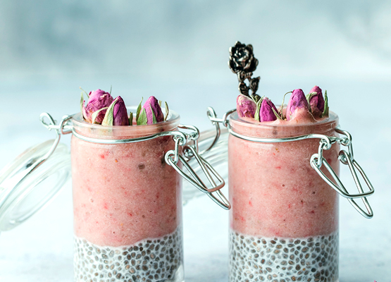

<div class="blog" id="blog">
	<div class="blog__row">
		<div class="title blog__title">Our blog</div>
		<div class="blog__column">
			<div class="blog__image"></div>
		</div>
		<div class="blog__column">
			<div class="post-blog">
				<div class="post-blog__line"></div>
				<div class="post-blog__title">ASAFOETIDA - THE NEXT TURMERIC?
					<span class="post-blog__date">Jun 16, 2020</span>
				</div>
				<div class="post-blog__text">If the fruit ingredients and the green vegetable ingredients are both
					juiced ahead of time, the mixed juice doesn't even have to be blended like a smoothie, i.e. a green
					juice or anything... <a href="#" class="post-blog__more">Read More</a></div>
			</div>
		</div>
	</div>
</div>